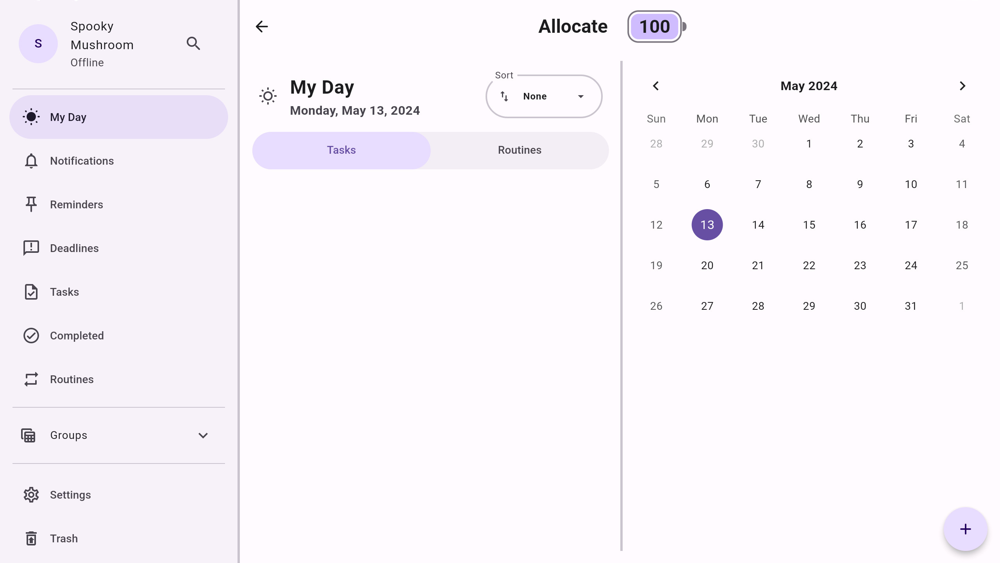
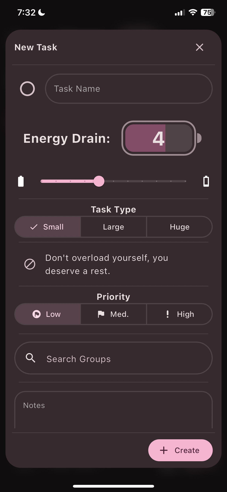

Allocate
- tags
- #Projects #Neurodivergence #Flutter #NoSQL #PostgresSQL
- published
- reading time
- 1 minute
Neurodivergent-Friendly Task Management
Project Documentation
Stack: Dart/Flutter, Isar/NoSQL, Supabase/PostgresSql
Features: offline-first functionality, cross-device data sync, weighted tasks, time-to-completion estimations, repeating calendar events
Allocate is a fully-featured, offline-first, cross-platform, task-managing application built with flutter—designed for the purposes of reducing my personal struggles with overworking and tendency to work myself into autistic burnout.

It uses a weighting system to add total costs required for completing tasks; these costs factor into time-estimations for completion and subtract from a global reserve currency alloted for tasks. The app will explicitly prevent you from adding new tasks to your daily list when you have met or exceeded your reserves. In essence this is to hold you accountable to prioritize taking care of yourself instead of work.
